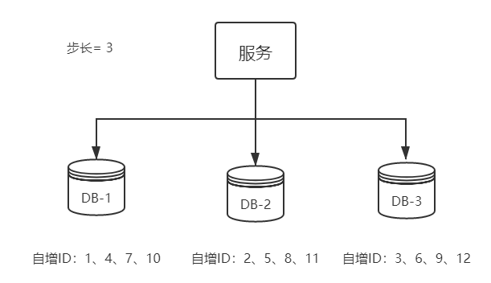
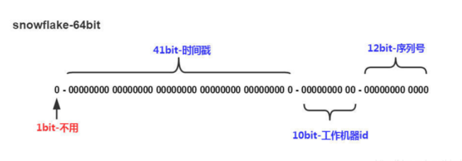
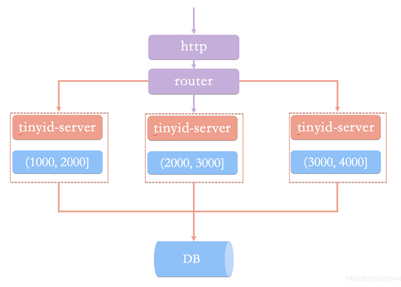

分布式系统中往往涉及生成唯一ID的业务：例如多个模块产生一类数据库的记录，需要保证记录的ID互不冲突。较优的ID生成规则往往需要满足：
- 唯一性：生成的ID全局上唯一，冲突的概率几乎为0
- 有序性：生成的ID按照某种规则有序，便于数据库的插入和排序
- 可用性：在高并发下依然能正确生成唯一的ID
- 高性能：每次生成唯一ID的相应速度要快
- 自主性：不依赖中心认证即可自主生成唯一的ID
- 安全性：不暴露系统和业务相关信息
这里总结一下主要的ID生成方案。
UUID
UUID全称通用唯一识别码 (Universally Unique Identifier），是一个由机器编码，时间和时钟编号等生成的全网唯一编码。
UUID由以下几部分的组合：
- 当前日期和时间。UUID的第一个部分与时间有关，如果你在生成一个UUID之后，过几秒又生成一个UUID，则第一个部分不同，其余相同。
- 时钟序列。
- 全局唯一的IEEE机器识别号，如果有网卡，从网卡MAC地址获得，没有网卡以其他方式获得。
关于UUID这个标准使用最普遍的是微软的GUID(Globals Unique Identifiers)。标准的UUID格式为：xxxxxxxx-xxxx-xxxx-xxxx-xxxxxxxxxxxx (8-4-4-4-12)。它能保证每个节点所生成的标识都不会重复，并且随着WEB服务等整合技术的发展，UUID的优势将更加明显。根据使用的特定机制，UUID最少在3000+年内不会重复。
优点：
- 生成简单，无需配置
- 无需中心服务支持，本地进行，没有网络消耗。
缺点：
- 生成的结果串长达36字节，作为主键使得MySQL查询效率低
- 基于MAC地址的UUID生成算法可能会泄露MAC地址
- 无需字符串作为ID，无法排序
用Jdk 1.5后提供了UUID的生成：
public static void main(String[] args) { |
MongoDB的ObjectID算法
MongoDB采用12字节的字符串作为生成的ID。其中被划分位4段：
- 4字节：秒级UNIX时间戳（Timestamp）
- 3字节：主机唯一标识符（Machine ID）
- 2字节：同一机器，不同进程产生的进程标识符（PID）
- 6字节：随机数计数器，在同一机器同一秒内自增，确保同一秒内产生的ID不冲突（Increment）
使用16进制字符串和-表示ObjectID，例：5dba76a3-d2c366-7f99-57dfb0表示：
- Timestamp：1572501155
- MachineId：13812582
- pid：32665
- Increment：5758896
MongoDB的ObjectID作为分布式ID，和UUID的原理类似，优缺点也类似：
优点：
- 本地生产，无需网络消耗，使用简单，没有高可用风险
- 生成的ID中包含了时间信息
缺点：
- 字符串ID占用12字节，不易储存，降低了查询性能
MongoDB 3.4前的Machine ID生成规则是：对
hostname去hash后的前几位，PID的生成规则是直接取进程号。但是随着虚拟化技术的发展，大量服务部署的环境hostname都是localhost，用容器部署的服务，由于容器中只有一个进程，PID一直为1，所以使得这两个字段不能区分不同节点的服务。3.4后Machine ID和PID都采用了随机数。
数据库自增ID
用Oracle的触发器或者MySQL的AUTO_INCREMENT实现插入时获取自增ID。
优点：
- 产生的ID有序，便于排序
缺点：
- 抗并发性不好，数据库压力大，数据库容易成为性能瓶颈
- 数据根据插入的先后严格自增，容易泄露数据量，容易被爬虫爬取数据。
- 无法维持高可用性：一般数据库都是读写分离，一主多从。插入数据获取ID是写操作，需要主库参与，一旦主库故障，系统就无法正常运行了。
可以用以下的几种方案弥补数据库生成自增ID的缺陷：
数据库按初始值和步长水平拆分
例如：将插入负载分配到3台数据库上，设置三台的ID的初始值分别为1,2,3。设置三台ID的增长步长为3:# MySQL1
set @@auto_increment_offset = 1; -- 起始值
set @@auto_increment_increment = 3; -- 步长
# MySQL2
set @@auto_increment_offset = 2; -- 起始值
set @@auto_increment_increment = 3; -- 步长
# MySQL3
set @@auto_increment_offset = 3; -- 起始值
set @@auto_increment_increment = 3; -- 步长
则三台数据库产生的ID分别为：

每台数据库能生成的ID是互不冲突的，而且防止了写入的单点故障。但是这种方案需要事先根据实际的数据量需求确定水平拆分的数量，不然很容易造成后期初始值分配耗尽，集群难以再扩容的问题。以上面的3节点集群为例，如果后续要再加入一个节点，需要停机修改所有节点的步长，并把初始值设置的大于当前最大ID。
基于数据库的号段模式
号段模式是当下分布式ID生成器的主流实现方式之一，号段模式可以理解为从数据库批量的获取自增ID，每次从数据库取出一个号段范围，例如 (1,1000] 代表1000个ID，具体的业务服务将本号段，生成1~1000的自增ID并加载到内存。表结构如下：CREATE TABLE id_generator (
id int(10) NOT NULL,
max_id bigint(20) NOT NULL COMMENT '当前最大可用的id',
step int(20) NOT NULL COMMENT '号段的布长',
biz_type int(20) NOT NULL COMMENT '业务类型',
version int(20) NOT NULL COMMENT '版本号，乐观锁，每次都更新version，保证并发时数据的正确性',
PRIMARY KEY (`id`)
)
等这批号段ID用完，再次向数据库申请新号段，对max_id字段做一次update操作，update max_id = max_id + step，update成功则说明新号段获取成功，新的号段范围是(max_id ,max_id +step]。update id_generator
set max_id = #{max_id+step}, version = version + 1
where version = #{version} and biz_type = XXX
缺点
- 单点故障服务器重启会丢失内存中分配到的ID号段，下次重新获得号段，造成ID不连续。
优点：
- 不强依赖于数据库，不会频繁的访问数据库，有效减轻了数据库的压力
- 数据库故障后还可以支撑一段时间
基于Redis生成ID
Redis所有命令是单线程的，本身提供INCR，INCREBY这样的自增原子命令，所以能保障生成的ID是唯一有序的。
优点：
- 不依赖数据库，且性能更高
- 生成的ID天然有序，利于分页和排序
缺点：
- 基于Redis生成本质上还是没有摆脱中心服务器的限制，依然没有解决高可用的问题。
127.0.0.1:6379> set seq_id 1 // 初始化自增ID为1 |
用Java编程的使用可以使用RedisAtomicLong的addAndGet()方法。
用Redis实现需要注意一点，要考虑到Redis持久化的问题。Redis有两种持久化方式RDB和AOF：
- RDB会定时打一个快照进行持久化，假如连续自增但Redis没及时持久化，而这会Redis挂掉了，重启Redis后会出现ID重复的情况。
- AOF会对每条写命令进行持久化，即使Redis挂掉了也不会出现ID重复的情况，但由于
INCR命令的特殊性，会导致Redis重启恢复的数据时间过长。
当数据量很大的时候，还可以仿照上述MySQL的方案配置Redis集群来获得更好的吞吐量。Redis生成ID适合处理每日从0增长的流水号：先获取当日日期yyyyMMdd，和一串开始数字000000001，每次用INCR累加数字，生成一个流水号。
SnowFlake
雪花算法（Snowflake）是Twiiter的分布式项目ID生成算法，在改算法影响下，国内各公司陆续开发出各具特色的分布式ID生成器。

Snowflake生成的是一个8字节的Long类型ID。
- 因为Long类型是带符号数，为了使ID一直为正数，第一个bit位一直为0。
- 41bit是毫秒级时间戳，时间戳不取当前时间戳，而是存：当前时间戳 - 固定开始时间戳。从0开始的41位时间戳可以用69年。
- 10bit是工作机器ID（workId），可以容纳1024个机器
- 12bit是序列号，支持同一机器同一毫秒内生成4096个ID
综上：Snowflake支持同一毫秒内生成$2^{22}$个ID，支持1024个机器工作69年。
优点：
- 生成的ID简短（只要一个8字节的Long类型即可容纳）
- ID是总体增长的，便于排序，但又不是严格连续的，不会泄露数据总量
- 不需要中心节点的调度，每台节点完成workId和开始时间的配置后，可以在本地执行ID生成任务。
缺点：
- Snowflake算法强依赖于时间，如果发生时钟回拨，可能会引起ID重复，所以建议关闭时钟同步。
实现代码如下：public class SnowFlakeShortUrl {
/**
* 起始的时间戳
*/
private final static long START_TIMESTAMP = 1480166465631L;
/**
* 每一部分占用的位数
*/
private final static long SEQUENCE_BIT = 12; //序列号占用的位数
private final static long MACHINE_BIT = 5; //机器标识占用的位数
private final static long DATA_CENTER_BIT = 5; //数据中心占用的位数
/**
* 每一部分的最大值
*/
private final static long MAX_SEQUENCE = -1L ^ (-1L << SEQUENCE_BIT);
private final static long MAX_MACHINE_NUM = -1L ^ (-1L << MACHINE_BIT);
private final static long MAX_DATA_CENTER_NUM = -1L ^ (-1L << DATA_CENTER_BIT);
/**
* 每一部分向左的位移
*/
private final static long MACHINE_LEFT = SEQUENCE_BIT;
private final static long DATA_CENTER_LEFT = SEQUENCE_BIT + MACHINE_BIT;
private final static long TIMESTAMP_LEFT = DATA_CENTER_LEFT + DATA_CENTER_BIT;
private long dataCenterId; //数据中心
private long machineId; //机器标识
private long sequence = 0L; //序列号
private long lastTimeStamp = -1L; //上一次时间戳
private long getNextMill() {
long mill = getNewTimeStamp();
while (mill <= lastTimeStamp) {
mill = getNewTimeStamp();
}
return mill;
}
private long getNewTimeStamp() {
return System.currentTimeMillis();
}
/**
* 根据指定的数据中心ID和机器标志ID生成指定的序列号
*
* @param dataCenterId 数据中心ID
* @param machineId 机器标志ID
*/
public SnowFlakeShortUrl(long dataCenterId, long machineId) {
if (dataCenterId > MAX_DATA_CENTER_NUM || dataCenterId < 0) {
throw new IllegalArgumentException("DtaCenterId can't be greater than MAX_DATA_CENTER_NUM or less than 0！");
}
if (machineId > MAX_MACHINE_NUM || machineId < 0) {
throw new IllegalArgumentException("MachineId can't be greater than MAX_MACHINE_NUM or less than 0！");
}
this.dataCenterId = dataCenterId;
this.machineId = machineId;
}
/**
* 产生下一个ID
*
* @return
*/
public synchronized long nextId() {
long currTimeStamp = getNewTimeStamp();
if (currTimeStamp < lastTimeStamp) {
throw new RuntimeException("Clock moved backwards. Refusing to generate id");
}
if (currTimeStamp == lastTimeStamp) {
//相同毫秒内，序列号自增
sequence = (sequence + 1) & MAX_SEQUENCE;
//同一毫秒的序列数已经达到最大
if (sequence == 0L) {
currTimeStamp = getNextMill();
}
} else {
//不同毫秒内，序列号置为0
sequence = 0L;
}
lastTimeStamp = currTimeStamp;
return (currTimeStamp - START_TIMESTAMP) << TIMESTAMP_LEFT //时间戳部分
| dataCenterId << DATA_CENTER_LEFT //数据中心部分
| machineId << MACHINE_LEFT //机器标识部分
| sequence; //序列号部分
}
public static void main(String[] args) {
SnowFlakeShortUrl snowFlake = new SnowFlakeShortUrl(2, 3);
for (int i = 0; i < (1 << 4); i++) {
//10进制
System.out.println(snowFlake.nextId());
}
}
}
uid-generator
uid-generator是由百度技术部开发，基于Snowflake算法实现的，与原始的snowflake算法不同在于，uid-generator支持自定义时间戳、工作机器ID和序列号等各部分的位数，而且uid-generator中采用用户自定义workId的生成策略。
uid-generator需要与数据库配合使用，需要新增一个WORKER_NODE表。当应用启动时会向数据库表中去插入一条数据，插入成功后返回的自增ID就是该机器的workId数据由host，port组成。
workId，占用了22个bit位，时间占用了28个bit位，序列化占用了13个bit位，需要注意的是，和原始的snowflake不太一样，时间的单位是秒，而不是毫秒，workId也不一样，而且同一应用每次重启就会消费一个workId。
Leaf
Leaf由美团开发，同时支持号段模式和snowflake算法模式，可以切换使用。
号段模式
先建一张表leaf_alloc：
CREATE TABLE `leaf_alloc` ( |
然后在项目中开启号段模式，配置对应的数据库信息，并关闭snowflake模式leaf.name=com.sankuai.leaf.opensource.test
leaf.segment.enable=true
leaf.jdbc.url=jdbc:mysql://localhost:3306/leaf_test?useUnicode=true&characterEncoding=utf8&characterSetResults=utf8
leaf.jdbc.username=root
leaf.jdbc.password=root
leaf.snowflake.enable=false
#leaf.snowflake.zk.address=
#leaf.snowflake.port=
启动leaf-server模块的LeafServerApplication，项目就跑起来了
- 号段模式获取分布式自增ID的测试url：
http：//localhost:8080/api/segment/get/leaf-segment-test - 监控号段模式：
http://localhost:8080/cache
snowflake模式
Leaf的snowflake模式依赖于ZooKeeper，不同于原始snowflake算法也主要是在workId的生成上，Leaf中workId是基于ZooKeeper的顺序Id来生成的，每个应用在使用Leaf-snowflake时，启动时都会都在Zookeeper中生成一个顺序Id，相当于一台机器对应一个顺序节点，也就是一个workId。
leaf.snowflake.enable=true |
snowflake模式获取分布式自增ID的测试url：http://localhost:8080/api/snowflake/get/test
Tinyid
Tinyid是基于号段模式原理实现的与Leaf如出一辙，每个服务获取一个号段（1000,2000]、（2000,3000]、（3000,4000]

Tinyid提供http和tinyid-client两种方式接入
Http方式接入
- 创建数据表：
CREATE TABLE `tiny_id_info` (
`id` bigint(20) unsigned NOT NULL AUTO_INCREMENT COMMENT '自增主键',
`biz_type` varchar(63) NOT NULL DEFAULT '' COMMENT '业务类型，唯一',
`begin_id` bigint(20) NOT NULL DEFAULT '0' COMMENT '开始id，仅记录初始值，无其他含义。初始化时begin_id和max_id应相同',
`max_id` bigint(20) NOT NULL DEFAULT '0' COMMENT '当前最大id',
`step` int(11) DEFAULT '0' COMMENT '步长',
`delta` int(11) NOT NULL DEFAULT '1' COMMENT '每次id增量',
`remainder` int(11) NOT NULL DEFAULT '0' COMMENT '余数',
`create_time` timestamp NOT NULL DEFAULT '2010-01-01 00:00:00' COMMENT '创建时间',
`update_time` timestamp NOT NULL DEFAULT '2010-01-01 00:00:00' COMMENT '更新时间',
`version` bigint(20) NOT NULL DEFAULT '0' COMMENT '版本号',
PRIMARY KEY (`id`),
UNIQUE KEY `uniq_biz_type` (`biz_type`)
) ENGINE=InnoDB AUTO_INCREMENT=1 DEFAULT CHARSET=utf8 COMMENT 'id信息表';
CREATE TABLE `tiny_id_token` (
`id` int(11) unsigned NOT NULL AUTO_INCREMENT COMMENT '自增id',
`token` varchar(255) NOT NULL DEFAULT '' COMMENT 'token',
`biz_type` varchar(63) NOT NULL DEFAULT '' COMMENT '此token可访问的业务类型标识',
`remark` varchar(255) NOT NULL DEFAULT '' COMMENT '备注',
`create_time` timestamp NOT NULL DEFAULT '2010-01-01 00:00:00' COMMENT '创建时间',
`update_time` timestamp NOT NULL DEFAULT '2010-01-01 00:00:00' COMMENT '更新时间',
PRIMARY KEY (`id`)
) ENGINE=InnoDB AUTO_INCREMENT=1 DEFAULT CHARSET=utf8 COMMENT 'token信息表';
INSERT INTO `tiny_id_info` (`id`, `biz_type`, `begin_id`, `max_id`, `step`, `delta`, `remainder`, `create_time`, `update_time`, `version`)
VALUES
(1, 'test', 1, 1, 100000, 1, 0, '2018-07-21 23:52:58', '2018-07-22 23:19:27', 1);
INSERT INTO `tiny_id_info` (`id`, `biz_type`, `begin_id`, `max_id`, `step`, `delta`, `remainder`, `create_time`, `update_time`, `version`)
VALUES
(2, 'test_odd', 1, 1, 100000, 2, 1, '2018-07-21 23:52:58', '2018-07-23 00:39:24', 3);
INSERT INTO `tiny_id_token` (`id`, `token`, `biz_type`, `remark`, `create_time`, `update_time`)
VALUES
(1, '0f673adf80504e2eaa552f5d791b644c', 'test', '1', '2017-12-14 16:36:46', '2017-12-14 16:36:48');
INSERT INTO `tiny_id_token` (`id`, `token`, `biz_type`, `remark`, `create_time`, `update_time`)
VALUES
(2, '0f673adf80504e2eaa552f5d791b644c', 'test_odd', '1', '2017-12-14 16:36:46', '2017-12-14 16:36:48'); - 配置数据库：
datasource.tinyid.names=primary
datasource.tinyid.primary.driver-class-name=com.mysql.jdbc.Driver
datasource.tinyid.primary.url=jdbc:mysql://ip:port/databaseName?autoReconnect=true&useUnicode=true&characterEncoding=UTF-8
datasource.tinyid.primary.username=root
datasource.tinyid.primary.password=123456 - 启动tinyid-server后测试
获取分布式自增ID:http://localhost:9999/tinyid/id/nextIdSimple?bizType=test&token=0f673adf80504e2eaa552f5d791b644c
返回结果:3
批量获取分布式自增ID:http://localhost:9999/tinyid/id/nextIdSimple?bizType=test&token=0f673adf80504e2eaa552f5d791b644c&batchSize=10
返回结果: 4,5,6,7,8,9,10,11,12,13
Java客户端方式接入
<dependency> |
配置文件tinyid.server =localhost:9999
tinyid.token =0f673adf80504e2eaa552f5d791b644c
test，tinyid.token是在数据库表中预先插入的数据，test是具体业务类型，tinyid.token表示可访问的业务类型
// 获取单个分布式自增ID |
总结：每种分布式ID生成ID都有各自的优缺点，在实际业务中，还是应该仔细分析实际的需求，结合使用场景，选取最适合的方案。
参考资料：